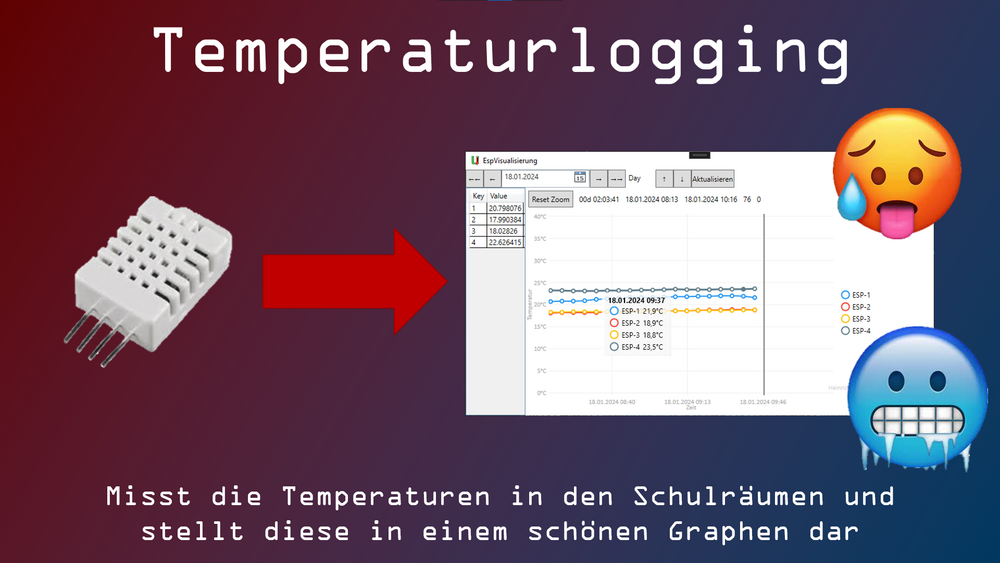

Projekte

Temperaturlogging
Erstellung von WPF-Anwendungen zur Anzeige von Temperaturen in Schulräumen und zur Verwaltung der dafür genutzten ESPs
Mehr erfahrenErstellung von WPF-Anwendungen zur Anzeige von Temperaturen in Schulräumen und zur Verwaltung der dafür genutzten ESPs
Mehr erfahren